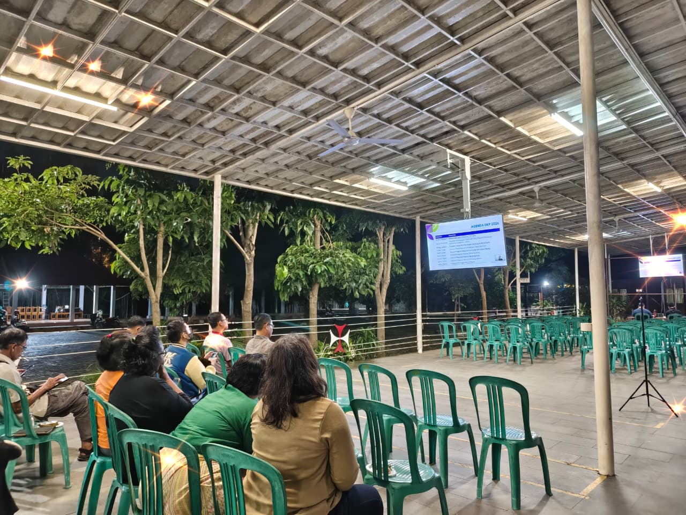

SOSIALISASI FOKUS PASTORAL 2026-2030 "BERJALAN BERSAMA SEHATI SEJIWA MENJADI GEREJA YANG RELEVAN, BERDAYA, DAN MISIONER"

Dalam semangat kebersamaan dan tanggung jawab perutusan, Paroki Kristus Raja Karawang mengikuti Sosialisasi Fokus Pastoral Keuskupan Bandung Tahun 2026–2030 melalui zoom. Kegiatan ini menjadi momentum penting bagi umat untuk memahami arah dan prioritas pelayanan Gereja dalam lima tahun mendatang. Suasana pertemuan berlangsung dengan tertib dan penuh perhatian. Umat yang hadir, terdiri dari Dewan Pastoral Paroki, pengurus wilayah dan lingkungan, serta perwakilan kelompok kategorial, mengikuti pemaparan materi dengan antusias. Sosialisasi ini tidak sekadar menyampaikan program, melainkan juga mengajak seluruh peserta untuk menyadari panggilan bersama sebagai Gereja yang hidup dan dinamis.
Fokus Pastoral 2026–2030 mengusung tema: “Berjalan Bersama Sehati Sejiwa, Menjadi Gereja yang Relevan, Berdaya, dan Misioner.” Tema ini menegaskan komitmen Keuskupan Bandung untuk menghadirkan Gereja yang mampu menjawab tantangan zaman, bertumbuh dalam kualitas iman, serta aktif mewartakan nilai-nilai Injil di tengah masyarakat. Gereja dipanggil untuk tidak berjalan sendiri-sendiri, melainkan dalam semangat persatuan, kolaborasi, dan tanggung jawab bersama.
“Dengan acara ini diharapkan umat paroki Kristus Raja Karawang dapat berjalan bersama sehati sejiwa berbagi sukacita.”
Berjalan Bersama Menuju Hak Atas Pangan untuk Kehidupan dan Masa Depan yang Lebih Baik.

Dalam pemaparan dijelaskan lima perhatian utama yang menjadi arah gerak pastoral, yakni kaderisasi Orang Muda Katolik (OMK), penguatan Pastoral Keluarga, peningkatan mutu katekese dan pewartaan, keterlibatan umat di ruang publik, serta pemberdayaan ekonomi dan pendidikan umat. Kelima bidang ini dirancang untuk menjawab kebutuhan konkret umat sekaligus memperkuat peran Gereja sebagai terang dan garam dunia.
Melalui sosialisasi ini, Paroki Kristus Raja Karawang menegaskan kesiapan untuk menerjemahkan Fokus Pastoral Keuskupan ke dalam program kerja yang nyata, terarah, dan berkesinambungan. Sinergi antara imam, biarawan-biarawati, dan kaum awam menjadi fondasi utama dalam mewujudkan cita-cita bersama tersebut.
setelah zoom diakhiri, Pastor Paroki memberi sedikit pesan penutup kepada umat yang hadir. Dalam arahannya, Romo menegaskan bahwa Fokus Pastoral 2026–2030 merupakan langkah bersama untuk menanggapi lima keprihatinan yang telah disampaikan oleh pihak Keuskupan. Tahun 2026 menjadi momentum awal untuk mengonsolidasikan seluruh kekuatan yang telah dimiliki paroki agar pelayanan pastoral benar-benar menjangkau situasi umat yang aktual dan nyata. “Kita perlu mengumpulkan seluruh kekuatan yang sudah ada, supaya pastoral kita betul-betul terjangkau situasi umat yang sesungguhnya. Kita tidak akan pernah tahu kondisi terkini jika tidak terus diperbarui dan di-update.” Romo juga menekankan pentingnya membedakan antara relevan dan signifikan. Menurutnya, sebuah program dapat saja relevan dengan kebutuhan umat, namun belum tentu memiliki daya ubah yang berarti apabila tidak dirancang secara berkelanjutan dan memberdayakan. “Kadang sesuatu itu relevan, tetapi belum tentu signifikan. Misalnya ekonomi kreatif karena umat membutuhkan pekerjaan—itu relevan. Tetapi kalau hanya berhenti di situ, belum tentu berarti. Signifikan itu artinya berdaya, memiliki power, dan akhirnya menjadi berkat.” Dalam konteks pastoral keluarga dan orang muda, Romo mengajak seluruh umat untuk melakukan refleksi mendalam mengenai dampak nyata pelayanan Gereja. Perubahan yang tampak secara fisik atau administratif belum tentu menunjukkan transformasi yang sesungguhnya apabila belum menyentuh pertumbuhan iman dan kemandirian umat. Lebih lanjut, Romo menggarisbawahi pentingnya keterlibatan seluruh unsur paroki, mulai dari wilayah hingga kelompok-kelompok pelayanan, agar tidak ada yang tertinggal dalam proses pembaruan ini. “Kita harus bergerak bersama dengan seluruh kekuatan yang ada di Gereja Kristus Raja. Semua dilibatkan dan tidak ada yang boleh tertinggal.” Harapannya, pada tahun 2031 dinamika pastoral telah berjalan secara normal dan berkelanjutan, dengan kader-kader baru yang terus tumbuh dan siap melanjutkan pelayanan. Dengan demikian, pelayanan pastoral tidak bergantung pada figur tertentu, melainkan bertumbuh sebagai sistem yang matang dan kolaboratif. “Siapapun Pastor Parokinya, pastoral di sini harus tetap berjalan dengan baik. Tidak lagi menjadi pastoran-sentris.” Di akhir sambutannya, Romo menyampaikan apresiasi atas kehadiran umat serta dukungan berbagai pihak yang terlibat, termasuk tim multimedia yang telah mempersiapkan kegiatan dengan baik.